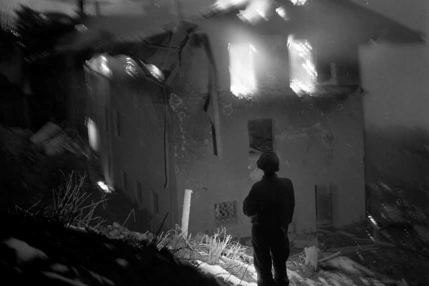

List of Books to
Read on a Cozy
Sunday Afternoon

 A photo of Adolf Hitler's house in Obersalzberg, set on fire by retreating SS troops, taken by Lee Miller.
The Face of War By Martha Gellhorn (1959) When the buccaneering journalist Marie Colvin reported from the battle zones of the late 20th century, she kept a copy of Martha Gellhorn's collected war essays in her bag. To Colvin and her generation, Gellhorn was a pioneer, a woman who challenged the prejudices of a misogynist military (as well as the ego of her husband, Ernest Hemingway) to claim her position as a frontline journalist. But Gellhorn was also a supremely humane writer. In her coverage of World War II, no less than in her reports from Spain and Vietnam, she wrote with heart-wrenching directness about the courage of individual soldiers and the catastrophic suffering of civilians. A fierce, fastidious stylist, Gellhorn still has the power to shock, not least in the unflinching account she gives of the sights, smells and sensations of war. An even fiercer moralist, her work continues to drive home the message that wars are far less often fought on grounds of idealism than of cynicism and greed.
Looking for Trouble By Virginia Cowles (1941) When Virginia Cowles first arrived in Madrid, in March 1937, Martha Gellhorn was snarkily unimpressed. In her high-heeled shoes, fur jacket and elegant wool dress, Cowles looked as though she were dressed for a Manhattan tea party rather than the trenches of Spain. Yet as the two women became friends, Gellhorn understood that Cowles was not only a doggedly ambitious reporter but one whose glamour facilitated unique access to her subjects, including a Soviet general so besotted with her that he spent three days feeding her champagne while trying to convert her to Marxism. “Looking for Trouble” is a rollicking thriller of a memoir, focusing on Cowles's first four years of war reporting as she traveled from Hitler's Germany to the frozen battlefields of Finland to the deserted streets of Paris (where she arrived two days before the occupying Nazis). Along the way the book records some of the remarkable interviews Cowles scooped—among them the gushing confessions of Unity Mitford as she boasted of her friendship with Hitler and the craven platitudes of Neville Chamberlain as he justified his Munich peace deal. The memoir ends, frustratingly, with the London Blitz. Readers looking for the rest of Cowles's extraordinary war will have to search it out in newspaper archives.
No Woman's World By Iris Carpenter (1946) More than 200 female journalists were accredited to the Allied forces by the end of World War II, but it wasn't until the final months of the war that a select few were allowed to report from the front. Writers like Iris Carpenter had found their own illicit ways to the fighting, but did so at their own peril. “No Woman's World” is a coruscating indictment of the system against which they had to battle. Nonetheless, it covers the struggle impressively, from the Battle of Britain on through V-E Day. The power of the book derives less from its coverage of battles than its unsentimental honesty. Carpenter records her own confused emotions on first entering Germany and having to decide how to view ordinary German citizens—as suffering victims, or the enemy, or both? She is no less forthright in her descriptions of the American soldiers with whom she traveled—many of them poignantly young and courageous but also brutalized by years at war. Her bluntness make this memoir a riveting read.
Lee Miller's War: Beyond D-Day Edited by Antony Penrose (2014) Lee Miller was the most unlikely of war correspondents. As a fashion model for Condé Nast; as mistress, muse and collaborator of Man Ray; and as a celebrity New York photographer, world events never impacted much on her work. But not long after she arrived in England in 1939, Miller and her camera found their most inspired and urgent subject. She captured a surreal poetry in the bombed-out streets of London. Then, in France and Germany as a photojournalist for Vogue, she delivered work of a similarly haunting vividness. Among the highlights of this handsome collection of essays and images, edited by her son, Antony Penrose, is Miller's report from the 1944 siege of Saint-Malo where, as the darling of the U.S. 83rd Division, she was given unfettered access to what she gleefully described as her own “private war.” No less gripping is her account of the joy and savagery she saw unleashed on the streets of liberated Paris, and the heroic stoicism with which she recorded the horrors of Dachau. The most memorable photograph in this collection shows a naked, sardonic Miller, scrubbing off the stink of Dachau in Hitler's bath.
The Heat of the Day By Elizabeth Bowen (1948) Set between 1942 and 1944, Elizabeth Bowen's novel evokes civilian life in London at the height of the war's terrors. In its gritty, uneasy depiction of a city gutted by bombs, rationing, sleep deprivation and fear, “The Heat of the Day” draws on Bowen's memories of her service as an air-raid warden. But in its story of the fraught, triangular relationship between Stella, her double-agent lover and the government spy who attempts to blackmail her, it is also an exquisitely penetrating view of the psychological impact of war. Through the fractured relationships of her characters, their moral confusion, their restless swings between hectic excitement and accompanying dread, Bowen tracks the trauma of the Blitz—as profound in its emotional effects as the violence wreaked on the city.
Related PostsList of Books to
Read on a Cozy
Sunday Afternoon